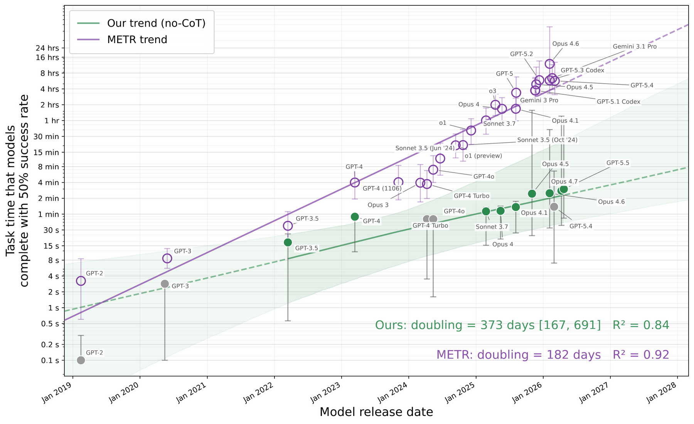

I'm an AI safety research engineer focused on dangerous capability evaluations, AI control, and red-teaming. I'm currently a Researcher in the Astra Fellowship at Constellation in Berkeley, mentored by Asa Cooper Stickland (UK AISI), where I build persistent-state control settings that test monitor-evasion strategies in agentic coding environments.
Over the past two years I've built evaluations at METR, UK AISI, and Redwood Research. At Redwood I built LinuxArena control settings end-to-end and implemented red-team side tasks for the shared ControlArena infrastructure. At METR I contributed to HCAST and created one of their largest self-proliferation evaluations, assessing whether LLM agents can autonomously acquire compute.
I hold a B.Sc. (Honours) in Computer Science with an AI/ML specialization from Carleton University.